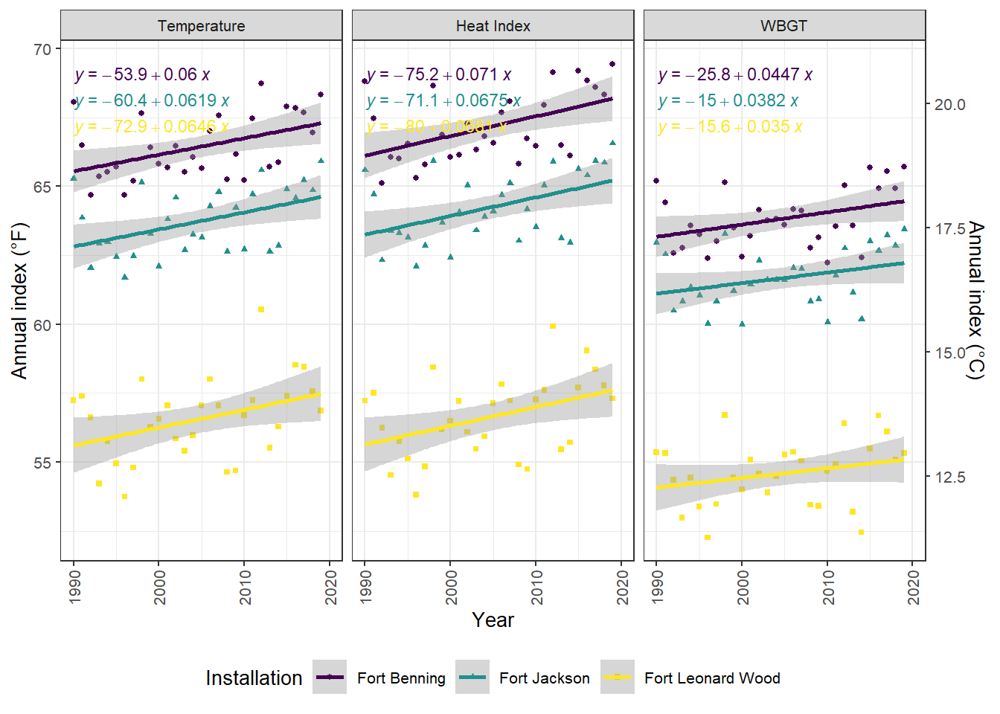
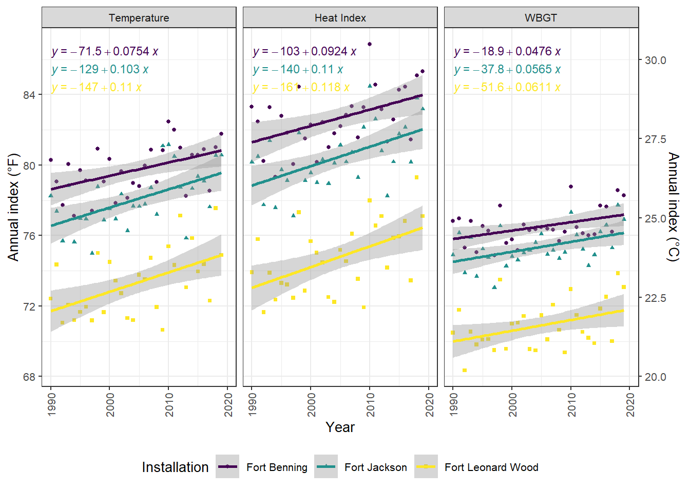
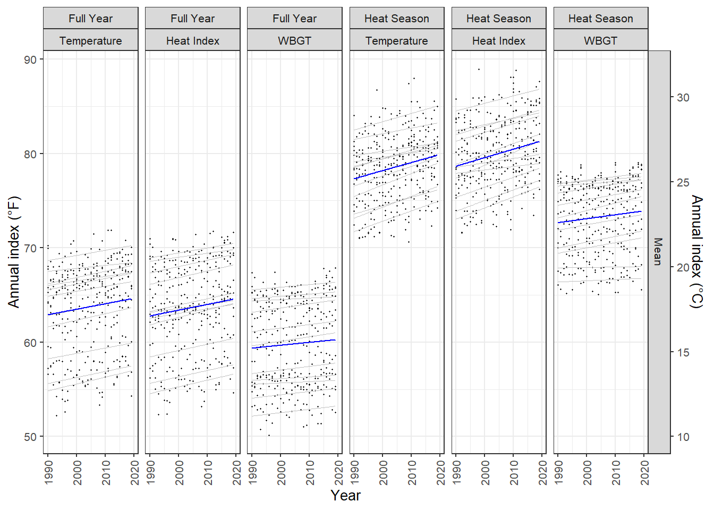
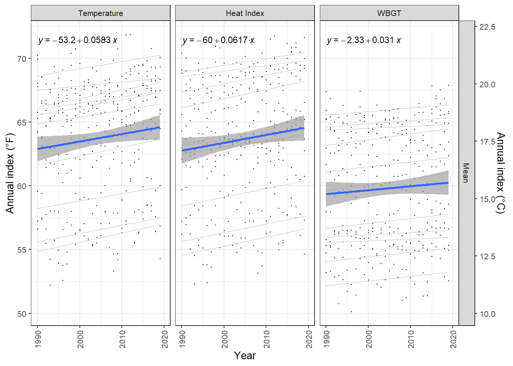

here() starts at G:/My Drive/research/thermal_phys
library(ggpmisc)
Loading required package: ggpp
Attaching package: 'ggpp'
The following object is masked from 'package:ggplot2':
annotate
library(viridis)
Loading required package: viridisLite
Data: Annual indices of heat and humidity, U.S. Army installations, 1990-2018 Stephen Lewandowski
R data files for annual indices of heat of 25 Continental U.S. (CONUS) U.S. Army installations from 1990-2018 in list and long formats.
Annual indices were derived from hourly meteorological estimates from the North American Land Data Assimilation System 2 (NLDAS-2) forcing dataset served as the primary source of weather and atmospheric data. We selected NLDAS grid cells containing the centroid of each installation based on shapefiles from the Department of Defense (DoD) Military Installations, Ranges, and Training Areas (MIRTA) Dataset. We calculated relative humidity from specific humidity, temperature, and atmospheric pressure; heat index (HI) from temperature and relative humidity based on a US National Weather Service algorithm; and outdoor WBGT from air temperature, relative humidity, solar irradiance, barometric pressure, and wind speed using the method of Liljegren et al.
# A tibble: 11 × 2
# Groups: site_name [11]
site_name n
<chr> <int>
1 Fort Benning 900
2 Fort Bliss 900
3 Fort Bragg 900
4 Fort Campbell 900
5 Fort Hood 900
6 Fort Irwin 900
7 Fort Jackson 900
8 Fort Leonard Wood 900
9 Fort Polk 900
10 Fort Riley 900
11 Fort Stewart 900
Plot IET Sites
IET - Full Calendar Year (Mean Annual)
mean_plot_iet_fullyear <- index_long %>%filter(site_name %in%c("Fort Benning", "Fort Jackson", "Fort Leonard Wood"), cat %in%"Mean", season %in%"Full Year") %>%mutate(index_scale =fct_relevel(index_scale, c("Temperature", "Heat Index", "WBGT"))) %>%ggplot(aes(x = year, y = value, color = site_name, shape = site_name)) +geom_point(size =1) +geom_smooth(aes(group = site_name), method = lm, se =FALSE, linewidth =0.25, alpha =0.5) +stat_poly_line() +stat_poly_eq(aes(label =after_stat(eq.label)), size =rel(3)) +facet_grid(~ index_scale, scales ="free") +theme_bw(base_size =10) +theme(strip.text =element_text(size =8)) +labs(x ="Year",y ="Annual index (°F)") +xlim(1990, 2020) +theme(axis.text.x =element_text(angle =90, vjust =0.5, hjust =1)) +scale_y_continuous("Annual index (°F)", sec.axis =sec_axis(trans =~ (5/9) * (. -32), name ="Annual index (°C)")) +theme(legend.position="bottom") +labs(shape ="Installation", color ="Installation") +scale_color_viridis(discrete =TRUE)mean_plot_iet_fullyear
`geom_smooth()` using formula = 'y ~ x'

IET - Heat Season (Mean of Daily Means from May to Sep)
mean_plot_iet_maytosep <- index_long %>%filter(site_name %in%c("Fort Benning", "Fort Jackson", "Fort Leonard Wood"), cat %in%"Mean", season %in%"Heat Season") %>%mutate(index_scale =fct_relevel(index_scale, c("Temperature", "Heat Index", "WBGT"))) %>%ggplot(aes(x = year, y = value, color = site_name, shape = site_name)) +geom_point(size =1) +geom_smooth(aes(group = site_name), method = lm, se =FALSE, linewidth =0.25, alpha =0.5) +stat_poly_line() +stat_poly_eq(aes(label =after_stat(eq.label)), size =rel(3)) +facet_grid(~ index_scale, scales ="free") +theme_bw(base_size =10) +# theme(strip.text = element_text(size = 8)) +labs(x ="Year",y ="Annual index (°F)") +xlim(1990, 2020) +theme(axis.text.x =element_text(angle =90, vjust =0.5, hjust =1)) +scale_y_continuous("Annual index (°F)", sec.axis =sec_axis(trans =~ (5/9) * (. -32), name ="Annual index (°C)")) +theme(legend.position="bottom") +labs(shape ="Installation", color ="Installation") +scale_color_viridis(discrete =TRUE)mean_plot_iet_maytosep
`geom_smooth()` using formula = 'y ~ x'

Plot All Sites
Mean Plot - All
## Degree-based indices: Mean / Maxmean_plot_all <- index_long %>%filter(cat %in%"Mean") %>%mutate(index_scale =fct_relevel(index_scale, c("Temperature", "Heat Index", "WBGT"))) %>%ggplot(aes(x = year, y = value)) +geom_point(size =0.2) +geom_smooth(aes(group = site_name), method = lm, se =FALSE, linewidth =0.25, color ="gray", alpha =0.5) +geom_smooth(method = lm, se =FALSE, linewidth =0.5, color ="blue") +#facet_grid(season + index_scale ~ cat, scales = "free") +facet_grid(cat ~ season + index_scale, scales ="free") +theme_bw(base_size =10) +theme(strip.text =element_text(size =8)) +labs(x ="Year",y ="Annual index (°F)") +xlim(1990, 2020) +theme(axis.text.x =element_text(angle =90, vjust =0.5, hjust =1)) +scale_y_continuous("Annual index (°F)", sec.axis =sec_axis(trans =~ (5/9) * (. -32), name ="Annual index (°C)"))mean_plot_all
`geom_smooth()` using formula = 'y ~ x'
`geom_smooth()` using formula = 'y ~ x'

All - Full Calendar Year, Annual mean
mean_plot_all_fullyear <- index_long %>%filter(cat %in%"Mean", season %in%"Full Year") %>%mutate(index_scale =fct_relevel(index_scale, c("Temperature", "Heat Index", "WBGT"))) %>%ggplot(aes(x = year, y = value)) +geom_point(size =0.2) +geom_smooth(aes(group = site_name), method = lm, se =FALSE, linewidth =0.25, color ="gray", alpha =0.5) +# geom_smooth(method = lm, se = FALSE, linewidth = 0.5, color = "blue") +#facet_grid(season + index_scale ~ cat, scales = "free") +stat_poly_line() +stat_poly_line() +stat_poly_eq(aes(label =after_stat(eq.label)), size =rel(3)) +facet_grid(cat ~ index_scale, scales ="free") +theme_bw(base_size =10) +theme(strip.text =element_text(size =8)) +labs(x ="Year",y ="Annual index (°F)") +xlim(1990, 2020) +theme(axis.text.x =element_text(angle =90, vjust =0.5, hjust =1)) +scale_y_continuous("Annual index (°F)", sec.axis =sec_axis(trans =~ (5/9) * (. -32), name ="Annual index (°C)"))mean_plot_all_fullyear
`geom_smooth()` using formula = 'y ~ x'

All - Heat Season, Annual mean
mean_plot_all_maytosep <- index_long %>%filter(cat %in%"Mean", season %in%"Full Year") %>%mutate(index_scale =fct_relevel(index_scale, c("Temperature", "Heat Index", "WBGT"))) %>%ggplot(aes(x = year, y = value)) +geom_point(size =0.2) +geom_smooth(aes(group = site_name), method = lm, se =FALSE, linewidth =0.25, alpha =0.5) +# geom_smooth(method = lm, se = FALSE, linewidth = 0.5, color = "blue") +#facet_grid(season + index_scale ~ cat, scales = "free") +stat_poly_line() +stat_poly_line() +stat_poly_eq(aes(label =after_stat(eq.label)), size =rel(3)) +facet_grid(cat ~ index_scale, scales ="free") +theme_bw(base_size =10) +theme(strip.text =element_text(size =8)) +labs(x ="Year",y ="Annual index (°F)") +xlim(1990, 2020) +theme(axis.text.x =element_text(angle =90, vjust =0.5, hjust =1)) +scale_y_continuous("Annual index (°F)", sec.axis =sec_axis(trans =~ (5/9) * (. -32), name ="Annual index (°C)"))mean_plot_all_maytosep